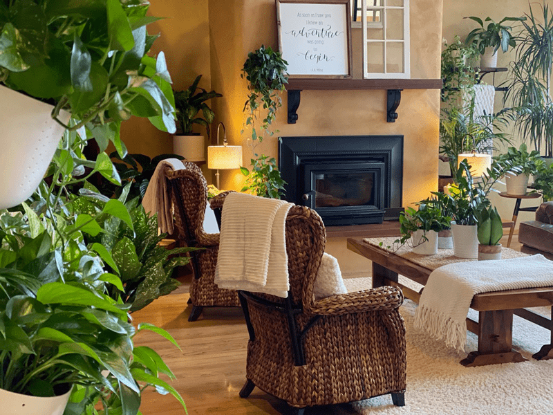
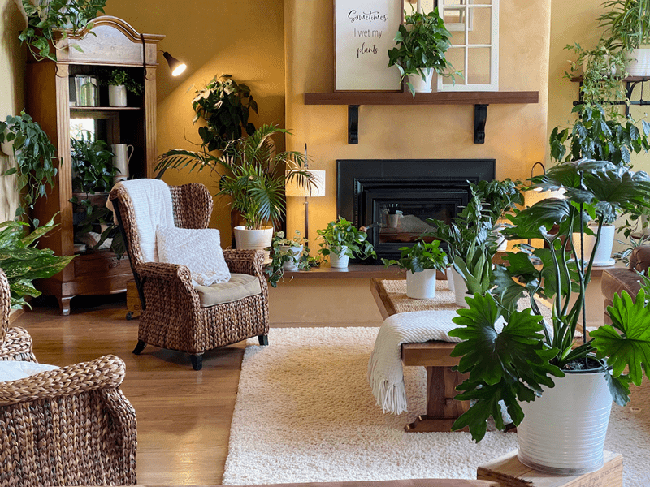
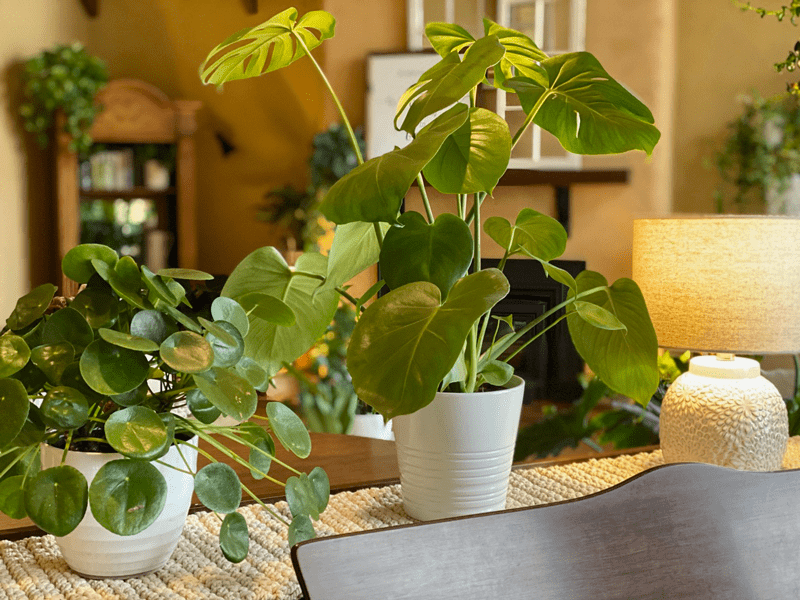
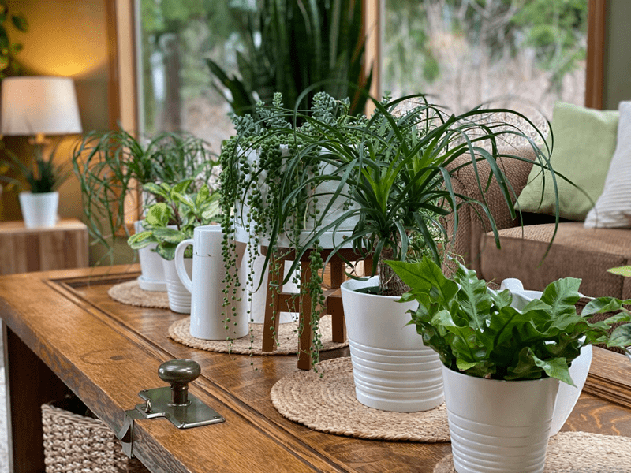

Interior Landscaping (plant styling)
Have you ever heard of the term biophilia hypothesis? Edward O. Wilson introduced the theory in his book, Biophilia. The word “biophilia” means “love of life or living systems.” It refers to the innate tendency of human beings to seek out connections with nature and other living things as a result of evolution.

We are seeing this more and more due to our technological advancements and more time being spent inside buildings and cars. It is argued that the lack of time spent in nature may be strengthening our disconnect from nature. Do you ever feel at times that the deeper we delve into technology, the more we crave connection, whether it be with humans, animals, or houseplants?! I sense it for sure. I shared over (here) how and why I got into houseplants, which seems to fit in with what I am sharing here.
Houseplants look great and are a budget-friendly home decor option! Plants are like living art and bring natural character to any space, and there are endless creative possibilities when it comes to decorating with plants. Adding houseplants to almost any room in your home can make the room appear bigger, warmer, and more inviting.
For the most part, interior landscaping is just what it says it is – a way of crafting and curating the inside of the structures that we live and work in so that they are comfortable and pleasing to us visually as well as physically… with houseplants. Without even being aware, you have already been sneaking nature into your home through; wood (flooring, furniture, cutting boards, etc.), stone (tiles, countertops, flooring, fireplace hearths, etc.) So why not add something a bit more free-flowing and organic? Ready? Let’s go!
How I Approach Decorating
Home interior design is a PASSION of mine; it’s right up there with developing healthy recipes. With some experience under my belt, I can now add Interior Landscaping to my list! Here are some tricks that I use when designing a room. I wasn’t taught any of these things; they just came naturally to me when I started decorating as a little girl. I use the following techniques when I decorate or design ANY space. In fact, this is so built into me that I do this in every home or store I visit. here are a few photos from the living room, dining room, and sunroom to give you a taste of my style (at the moment, haha).

Furniture Placement
- Furniture placement is the first thing I do when decorating. I do everything I can NOT to block windows. I want as much light and nature to come through as possible.
- I place furniture in a space, based on its functionality and size. Even in a small area, I lean towards larger pieces of furniture, they create the foundation in a room, and I find that a lot of little pieces translate to a room that feels cluttered. Over-scale furnishings, art, or fixtures can make a space feel more significant rather than smaller, and they evoke an air of warmth and comfort.
- I make sure to evenly disperse furniture based on its weight (visually things project weight). Putting all heavy, large pieces all on one side of the room seems unbalanced. Large pieces get placed first, then smaller pieces.
- Stand in the entrance of a room and look straight ahead. Let your eyes soften, allowing your peripheral vision to soak in the room. Don’t turn your head or lose focus. Get a sense of the weight of the furniture, is it evenly dispersed throughout the space?
- After I set things up, I look at the space from ALL angles. I sit in every chair or couch to see what the view is. I want every resting place to be an experience. I want it to be comfortable and inviting.
Color Placement
- I use the same approach with color placement in a room. If you have accent colors that you decorate with, are they evenly dispersed around the room, creating balance?
- If that space doesn’t feel complete, a floor plant could be the missing ingredient that completes the room while bringing a new sense of freshness to the decor.
- Right now, I decorate with wood surfaces and green and white accent colors. The wood is my flooring, trim around windows and furniture. The green comes from all my plants, and the white comes from my plant cover pots, toss pillows, area rugs, and blanket throws. I replaced all my knick-knacks with plants: the result, homey, warm, comfortable, inviting, and clean feeling.
Decor Tips
- Adding a large mirror to a room can open it up. Make sure that it reflects something pleasing, not a blank wall or dead space. Putting one behind plants is a great way to add volume and light to your plant jungle without adding more plants.
- Curved furniture, such as plant tables (but goes for any piece) are softer and more free-flowing to the eye. Furniture with sharp edges is more for a modern minimalistic look.
- Reduce clutter by weeding out tiny knick-knacks, reducing cleaning time too.
- Use furniture that has dual purposes like drawered cabinets. You can store everything and anything in them, keeping the space clean and organized. Decorate the flat surfaces with houseplants to soften the space.

Placement – location location location.
First and foremost, never force a plant to be in a place where it doesn’t belong. If they are artificial plants, that’s another story, but real plants have specific needs to thrive. The health of a plant is more important than what is just pleasing to the eye. So let’s talk about placement. We will be talking about lighting, temperature, and other important things.

Lighting (natural and electric)
Proper indoor lighting is just one of the requirements as it gives plants the energy they need to grow, thrive, even to stay alive. Too much or too little light can quickly stress a plant, which makes them more prone to disease, pests, and premature death. Fortunately, most plants come labeled with information about their sunlight preferences, so that takes part of the guessing game out of it. However, finding optimal lighting for your plant can take some trial and error, so you’ll have to monitor it closely.
Often you will hear people say, “Place the plant in a north, south, west, or east-facing window.” Does it matter? It does because each direction offers a different intensity of light. But when it comes to window light, other things come into play. Do you have curtains on the windows? Do they stay open or closed? Are there trees outside of the house windows that block the incoming sun? Let’s go over how direct, bright, low, and shady light can look.
 Bright Light Location (direct sun)
Bright Light Location (direct sun)
- Bright light means a sunny southern or western facing window that receives direct light all day long.
- Bright direct light can be too harsh for most plants.
- A sheer curtain window dressing may be needed to help diffuse the light, so it doesn’t burn the foliage.
- This type of light shifts during the winter but resist the temptation to move your plant closer to the window. Most plants that need bright light will not be able to handle the cold draft that increases as you move closer to the window.
- Plants that can handle bright light conditions: (but not limited to) aloe vera plants, succulents.
Indirect Light Location
- Indirect sunlight is sunlight that doesn’t shine onto a plant at full strength. Instead, it is weakened by something coming between it and the plant, like a sheer curtain.
- This is typically within 4-5 feet of an east- or west-facing window or 3-5 feet from a window that faces south or southwest.
- Indirect light is what most plants seem to enjoy to thrive at their fullest potential. Most people seek plants that can handle low light conditions, and though most can handle it; they might not be “all that they can be.”
- Plants that can handle indirect light conditions: (but not limited to) peace lily (they will flower more frequently in brighter light), aloe vera plants, spider plants, pothos plants, etc.
Low Light (partially shaded) Location
- Many rooms qualify as low light, especially in winter.
- Rooms with north-facing or partially shaded windows would qualify as low light situations. If you can’t easily read a book, it’s probably low light.
- For instance, a east-facing window where the morning sun shines into the room for only a few hours. The morning sun is cooler than the afternoon sun, so you don’t have to worry about overheating your plant.
- Directly in front of a north-facing window gives a plant low-to-medium light intensity.
- :Plants that can handle low light conditions (but not limited to) peace lily, Dracaena sanderiana, spider plants, pothos plants, snake plants, dracaena plants, philodendron, ZZ plants, monstera deliciosa, rabbit’s foot fern, cebu blue epiprenrum, and more
Shady Location
- More than 6 feet away from a south- or southwest-facing window.
- Hallways, staircases, and corners of rooms.
- Near windows that are shaded by trees.
- Typically, houseplants don’t thrive too well in these conditions, and I try to avoid it. I will say, however, that I have a jade pothos that is doing fantastic in a shady location. A variegated plant defiantly wouldn’t do well in this lighting. The more white coloring that a leaf has, the more light it requires.
- Plants that can handle shady conditions: (but not limited to) peace lily, variegated pothos, jade pothos, snake plant, prayer plant, philodendron, spider plants, etc. Again, these plants would do better with a bit more light.
Fluorescent Lighting
- I am not referring to grow lights; I am talking about overhead, main light source lighting.
- Fluorescent lights are ideal for plants with low to medium light requirements.
- I have 38 houseplants in my studio which is lit with fluorescent lighting. Click (here) to learn more.

Temperature Requirements
Once you understand the lighting requirements of your plants, you will need to assess the temperature of different rooms or spaces. Plants don’t like to be exposed to hot or cold drafts. Take the following into consideration:
- Windowsills – depending on the direction of incoming light and time of year, windowsills can be cold or hot.
- Heater vents – overhead, on walls, or on floors. When winter comes, and more direct heat is being used in the house, plants may require more frequent watering.
- Fireplaces and space heaters- when in use, make sure to move plants out of the direct heat.
- Air conditioner – use the same approach as you do with heater vents.
- Window and door drafts – depending on the severity of temperature that comings in through windows and doors, you may need to relocate your plants.
Watering Requirements when Decorating
Just like plants need the appropriate lighting, they need water! I am not going to be chatting about how to water much or often to water your plants. I just wanted to point out that when decorating with houseplants, you need to consider watering. If you add plants to every room of your house, you will need to visit each room to water them.
When I water plants, I bring them to the sink because I use this time to inspect my plants, prune them, feed them, and water them. This is my routine; do what works best for you. But keep in mind how far you need to travel throughout the house when watering plants. If they are tucked in rooms that you don’t use all that often, will you forget to water them? Basically, that’s my point here.

Plants love to be Grouped!
The beauty of plant styling is that they can be small enough to accent a tiny desk or small, open shelving, or they can be large enough to command floor space of their own. Like most humans, plants like to be around others! Plus, plants tend to look better when grouped, typically in groupings of three plants or more. Not only is the grouping of plants aesthetically pleasing, but it is also beneficial to the life of your plant. For example, I have 25 plants on one wall. I call it my Living Wall. Those plants are always so darn happy! I swear they have created their own eco-system. Here are some ideas that you can test out.
- Lush and contemporary feel – Group identical plants together
- Forested / jungle feel – Pace tall plants in the back of groups, the staggering plant heights around it. Large plants can act as a canopy as they do in nature.
- Minimal feel – Strategically placing a single plant in a white pot can give a real minimal clean look to your decor.
- Make a statement! – Create a living wall! Plants don’t have to just be on the floor, tables, or hanging from the ceiling… use your walls to create living art!

Decorative Pots and Bases
Plants alone can set the stage, but pots pull them all together. Look for containers that complement your interior decor, and that also fits your lifestyle. Size, shape, color, and texture! On the main floor of our house, my accent colors are green and white. Green coming from the plants and white coming from the cover pots, toss pillows, throws, and rugs. When we did our purging (as mentioned above), we got rid of our nick-nacks. They collected dust and made things cluttered. I turned my love for plants into my decor.
Cover Pots
- Use cover pots – Cover pots catch drips! It’s always best to pot plants in containers that have drainage holes for plant health but also to protect your furniture or flooring.
- Use cover pots that are appropriately sized for the plant. Sometimes the grow pots are oddly shaped, and it can be hard to find cover pots for them to fit in. You’d be surprised just how many of my cover pots have can of coconut milk in the base of it just to give the plant height within the cover pot. Lol If we ever have a food shortage, I have a secret stash in the bottom of my plant pots.
- Select colored cover pots with your decor in mind. Using the same colored containers throughout the house gives your style a sense of unity. If you have a house full of color, then by all means, use a wide variety of colored pots.
- Your imagination is the only limit on what you can do and use for pots.

Mobile or Rotating Plant Bases
If you have a lazy susan in your kitchen that you don’t use much, you might want to up-cycle it as a plant tool for your houseplants. As you may or may not know, it’s always a good idea to rotate your plants.
By doing this, it prevents them from being lopsided as they reach for the sun. I had a bunch of lazy susans from a project years ago. I thought about getting rid of them so many times, but once I got into houseplants, I found that they work amazingly for rotating my plants. Here are a few things that I do:
- Use them on medium to large-sized plants, so the lazy susan is close in size to the plant pot. It’s just more pleasing to the eye.
- If the lazy susan is the wrong color, spray paint the top and edges. That way, they blend in.
- If you have large plants, this will save your flooring! I also add wheels to platforms to help move or rotate my floor plants. You can pick up a variety of sized wheels from hardware stores and attach them to about anything. My favorite is the ones I made from old wooden wine crates.
Caution – Those with Pets and Children
If you have pets or children, many plants need to be kept up off the floor and out of reach due to being poisonous if ingested. Be sure to research the plants that you have in your home to see their threat level. I almost sound like a CIA agent there… threat level! Haha But on a serious note, keep those little ones safe!
I hope you found this helpful. Please leave a comment below but most of all… have a blessed day. amie sue
© AmieSue.com